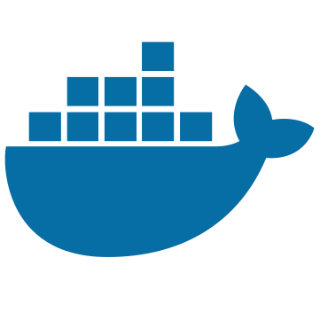
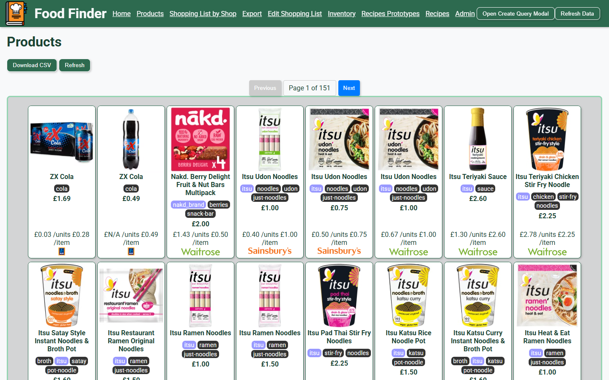
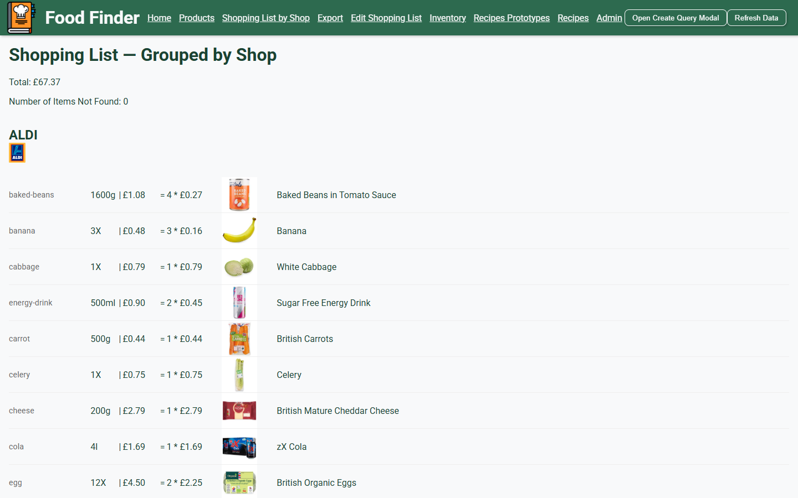

Accessibility
Leave Feedback
Food Finder
A Go web app that works out the cheapest way to eat well. It scrapes UK supermarkets, makes sense of the messy product data, then plans my shopping list and recipes around what I already have at home.
1.5 Years
Solo
Skills Used:
Go

Docker
Java Script
HTML
CSS
Git
Why I Built It
Comparing food prices by hand is slow, because every shop lists things differently: "6 x 330ml", "1.5kg", "500g (2 x 250g)". I wanted a tool that could compare a tin of tuna and a multipack of tuna fairly, ignore what I already own, and tell me what to buy and where.
The repository is private, but I am happy to walk through the code in an interview.
How It Works
Store Scraper
Eight supermarkets are described in JSON config, with CSS selectors for the title, price, quantity and image, so adding a shop needs no code change. Requests are rate limited to one a second, cached to disk with an expiry, and de-duplicated before saving.
Quantity Parsing
Listing text like "4 x 125g" or "12% fat" is turned into typed quantities using a table of regex unit matchers, with unit conversion and ratios between quantities. That makes price per kilo, per litre or per item comparable across every shop.
Tagging Engine
Over 400 rules tag products against a hierarchy of 600+ tags. Rules can be n-gram matches on stemmed, accent-stripped names, regexes, quantity checks or other tags, and are combined with and/or logic. Rules that depend on other tags are put in order with a dependency graph, and circular dependencies are rejected.
Shopping List
Each item is a condition plus an amount. The planner subtracts what is already in my inventory, filters matching products, works out how many packs are needed, and picks the cheapest option per store, limited to the shops in my profile.
Recipe Variants
Recipes list ingredients as conditions rather than fixed products. The app builds every permutation of inventory items that fits, including optional ingredients, and pages through them without generating them all up front.
Maps & Admin Tools
Nearby stores are found with the OpenRouteService points-of-interest API and shown on a map. An admin UI lets me create tags and rules from the browser, with validation that stops duplicate tagsand unknown references from being saved.
Web App
A Go (chi) server with Jinja-style templates and a JavaScript front end using editable tables for products, inventory and profiles. The data layer sits behind a generic storage interface, with JSON and CSV backends and in-memory caching.
Quality & Delivery
Unit tests cover the unit parsing, tagging, NLP and scraper post-processing, plus data validation tests on the config and a benchmark of the whole pipeline. GitHub Actions checks generated code, runs the tests and publishes a Docker image.
Screenshots

Products
Scraped listings from every store as cards, each with the tags the rules gave it, the price and a unit price that can be compared across shops.
Shopping List
The cheapest matching product for each item, grouped by shop, with the number of packs needed after subtracting what is already in my inventory.

What It Shows
Turning messy real-world data into something reliable, graph and dependency ordering, designing a flexible rule system, clean service-based Go architecture with generics and interfaces, and taking a full-stack product from scraping through to deployment on my own.